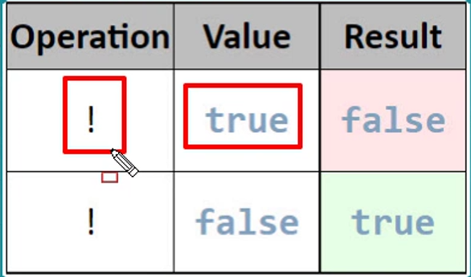

El operador NOT (!) devuelve verdadero si la expresión es falsa y falso si la expresión es verdadera. Su tabla de verdad es la siguiente:

Pulsa F12 para abrir la consola y ejecutar el código de ejemplo.